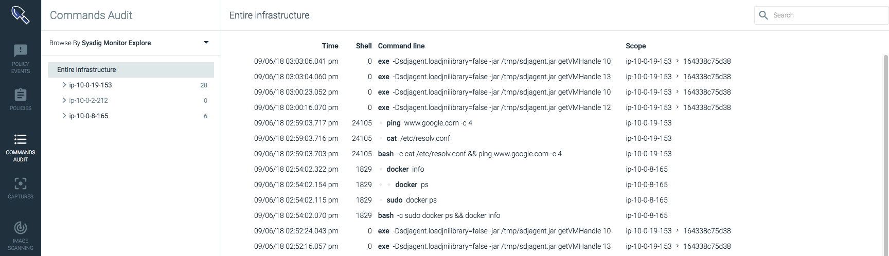
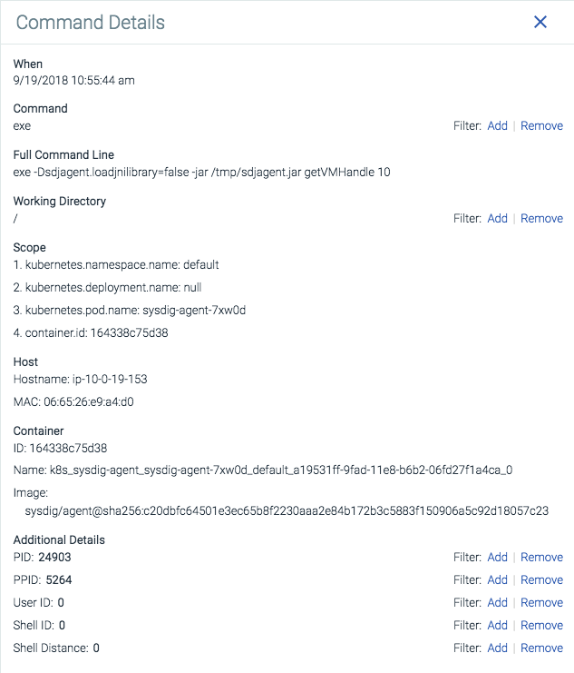
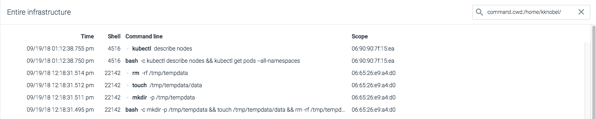

Commands Audit
The Commands Audit module provides Sysdig Secure users with a searchable and sortable audit trail of user commands executed within the infrastructure.
Note
While policy events are an inherently suspicious activity that warrants investigation, commands are not themselves considered suspicious.
The Sysdig Agent examines all execve events. Information about commands that meet the following criteria is saved by the Sysdig backend, and made available for review as a command entry in the Commands Audit module table:
A program was launched by a shell associated with a terminal (i.e. is related to a user-entered command).
The parent process was launched in a running container (i.e. the result of a
docker exec <container>command).
Warning
If an excessive volume of commands occurs in a given second, some commands may be excluded from the information sent from the agent to the Sysdig backend.
|  |
The table below outlines the information displayed in the Command Audits module:
Data | Description |
|---|---|
Time | The date and time the command was executed. |
Shell | The terminal shell the command was executed in. |
Command Line | The full command executed, including flags/variables. |
Scope | The affected scope within the infrastructure. |
Review a Command
Individual commands can be reviewed by selecting the line item in the Commands Audit module table. This opens the Command Details window:
|  |
The table below outlines the information displayed in the Command Details window:
Name | Description |
|---|---|
When | The date and time the command was executed. |
Command | The command executed. |
Full Command Line | The complete command, including all variables/options. |
Working Directory | The directory the command was executed in. |
Scope | The entities within the infrastructure impacted by the command. |
Host | The hostname and MAC address of the host the command was executed on. |
Container | The container ID, container name, and image that the command was executed on. |
Additional Details | Detailed user/host information:
|
Filtering the Commands Table
The Commands Audit module's table can be filtered to display only the most relevant commands for a particular issue, or to provide greater visibility of a more targeted scope within the infrastructure. There are three ways to filter the table, which can be used in tandem to refine the information presented.
Groupings
Groupings are hierarchical organizations of labels, allowing users to organize their infrastructure views in a logical hierarchy. Users can switch between pre-configured groupings via the Browse By menu, or configure custom groupings, and then dive deeper into the infrastructure. For more information about groupings, refer to the Configure Groupings in Sysdig Secure documentation
Time Navigation
The time window navigation bar provides users with quick links to common time windows, filtering the table to only show commands run within that window. For more information on time windows, refer to the Time Windows documentation.
Note
Sysdig Secure does not currently provide the functionality to configure a custom time window.
Search Filters
Search filters can be applied by either using the search bar directly or by adding pre-configured search strings via the Command Details panel. The search bar example below displays only table items that include apt-get:
 |
To use a pre-configured search string:
From the
Commands Auditmodule, select a command from the table to open theCommand Detailswindow.Add a filter by click the
Addlink beside one of the available options:
The example below shows the table filtered by the working directory:
|  |
Pre-configured filters exist for the following information:
Command
Working Directory
Process ID
Parent Process ID
User ID
Shell ID
Shell Distance
Note
Search filters can be deleted by either deleting the text in the search bar or clicking the Remove link beside the filter in the Command Details window.